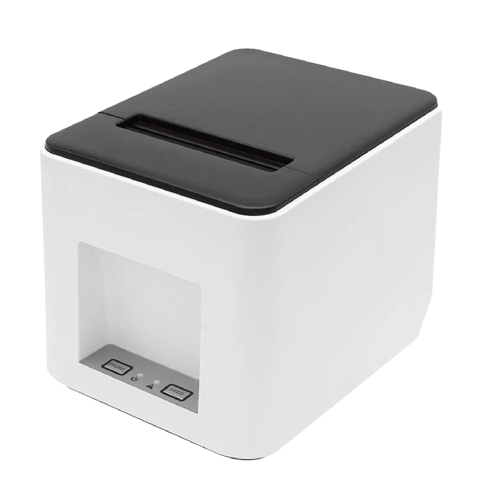
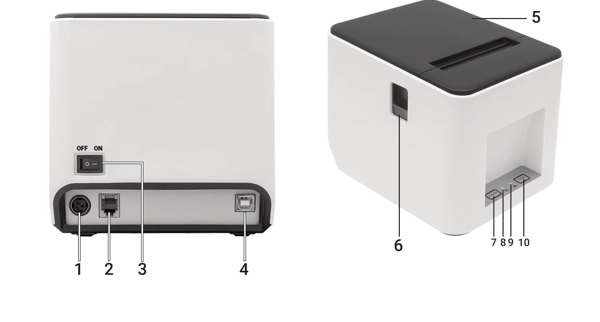
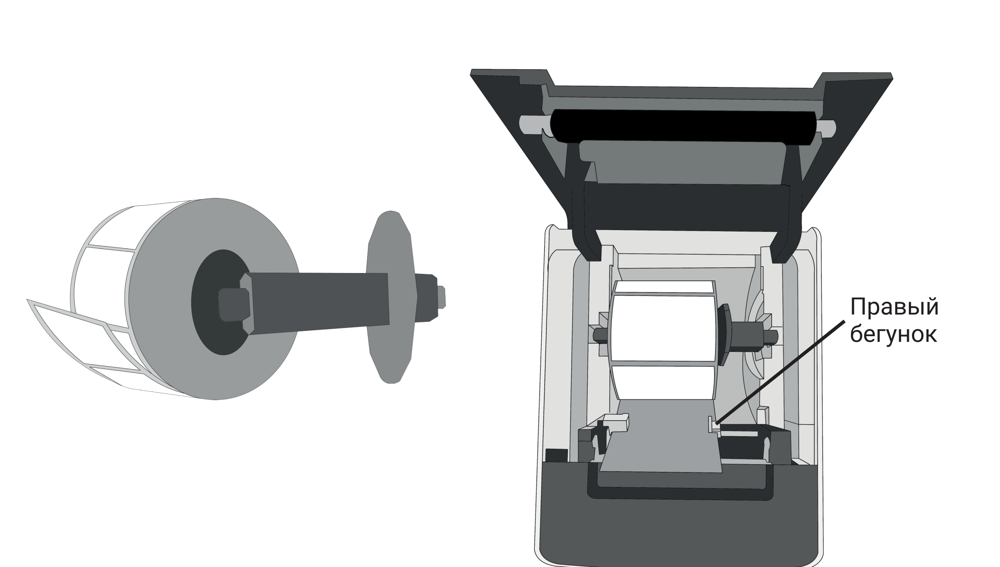
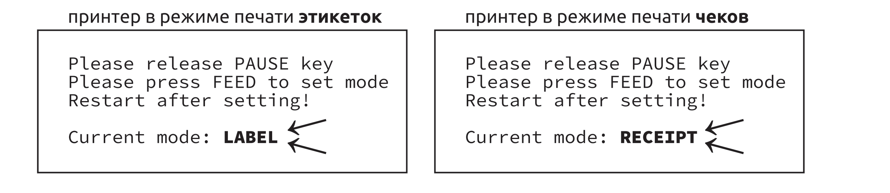

Страница вашего принтера: 4barcode.ru/v3
Производитель: Джухай Глобал Технолоджи ко. ЛТД
ZHUHAI GLOBAL TECHNOLOGY CO., LTD
Адрес: Китай, провинция Гуандун, город Чжухай, район Сянгжоу,
Цианьшан промышленный парк, Хуавей шоссе, 613, строение 1, блок 5F, С
Гарантийный срок — 12 мес.
Сделано в Китае.



Принтер печатает на термоэтикетках (не путать с термотрансферными) и на кассовой ленте. Кассовая лента устанавливается без держателя рулона.
Ширина этикетки — до 75 мм, кассовой ленты — до 80 мм. Внешний диаметр рулона — не более 85 мм.
Лента сходит с рулона снизу, этикетками вниз — печатающая головка находится внизу.
При каждом включении и при закрытии крышки на включённом принтере проходит автоматическая калибровка датчика зазора — выходит одна-несколько этикеток. Чтобы не терять их, после калибровки нажмите PAUSE — этикетка вернётся внутрь.
По умолчанию принтер работает в режиме печати этикеток. Чтобы переключить режим (например, на печать чеков — RECEIPT):

По USB: Windows, Ubuntu*, macOS*, Android*. По Bluetooth (модификация с Bluetooth-модулем): Windows, Android, iOS.
Для модификации с Bluetooth-модулем.
Для печати с телефона на Android или iPhone установите бесплатное приложение 4BarCode — наведите камеру телефона на QR-код:
Скачайте BarTender на странице 4barcode.ru/v3 (раздел «Программы для этикеток»). При активации введите ключ из файла «КЛЮЧ_ЛИЦЕНЗИИ» — включится бесплатная бессрочная редакция UltraLite.
Без установки и регистрации: штрихкоды, QR-коды, знаки EAC, готовый PDF в размер этикетки — 4barcode.ru/editor
Очищайте печатающую термоголовку после каждого отпечатанного рулона — так она дольше служит и печатает чётко. Внеочередная очистка нужна, если:
Чем: спиртовой ваткой (палочкой или салфеткой, смоченной спиртом) или специальным чистящим карандашом для термоголовок.